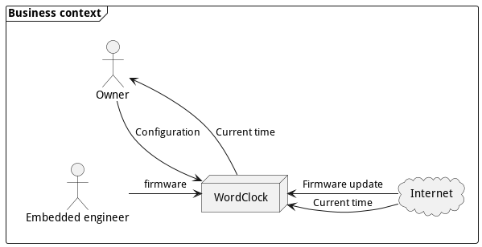
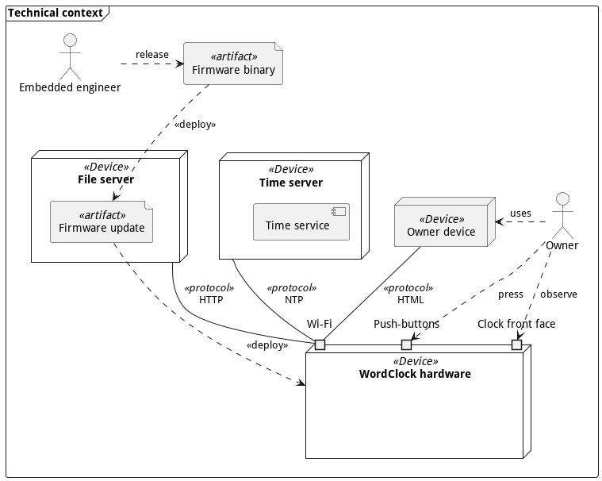
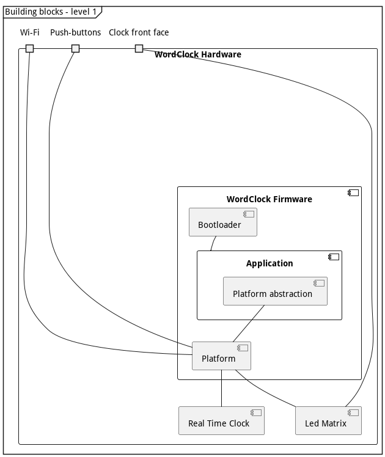
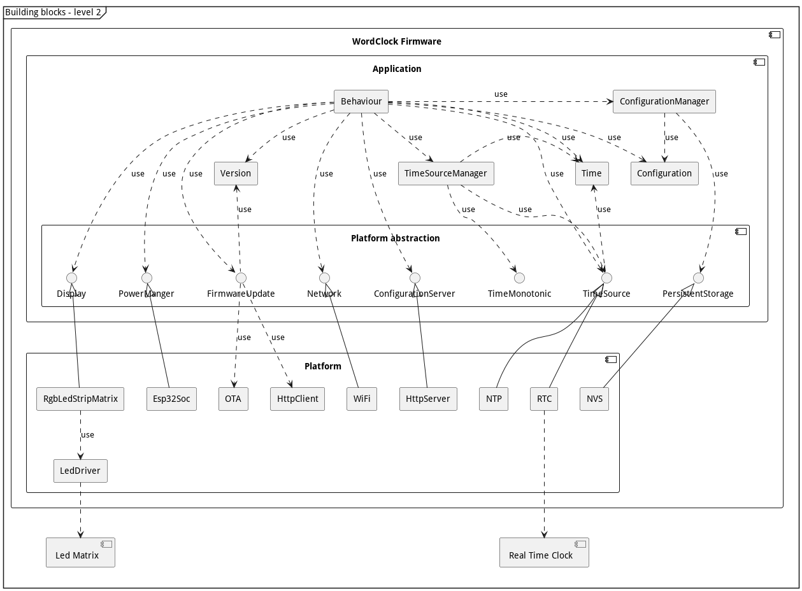
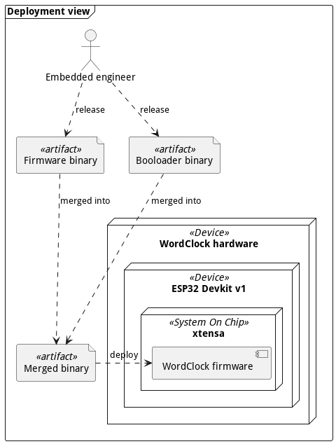
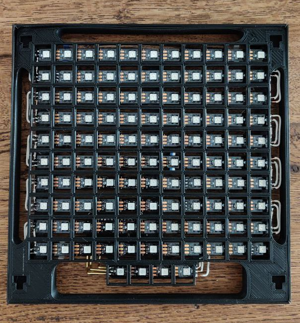

Introduction and goals
WordClock is a hobby project, aiming to create a nice looking time keeping art work.
The secondary goal is to have a project to experiment with various technologies like Rust, laser cutting, 3d printing, and various engineering skills like software architecture, software requirements, Test-Driven Development and documentation.
This document is not limited to software architecture, but considers all the work realized by the Embedded engineer, include PCB design.
Requirements overview
Essential features:
- Display current time, using your favorite Swiss-German dialect.
- Set system time, manually or automatically.
- Keep time accurately.
- Disable display during the night, if wanted.
Quality goals
| ID | Quality | Motivation |
|---|---|---|
| QG1 | Reliability | The system shall function reliably under any circumstances. |
| QG2 | Autonomous | The system shall provide long up-time without human intervention. |
| QG3 | Testability | The architecture should allow easy testing of all main building blocks. |
Stakeholder
| Stakeholder | Goal, Intentions |
|---|---|
| Owner | Want a nice time keeping device, that display the time in her favorite Swiss-German dialect. |
| Embedded engineer | Develop the electronic hardware and software that make the WordClock does its things; Learn and apply new software development skills. |
| Wood engineer | Manufacture the WordClock physical parts; Provides feedbacks and constraints on the WordClock hardware and software. |
Use case
Developer:
- Release new version of the firmware.
- Install the firmware on the system.
- Address User reported issue.
User:
- Read time from system.
- Configure the time of the system.
- Configure the dialect of the system.
- Configure Wi-Fi setup for automatic time setting.
- Configure Night time, where the clock is not displaying the time.
- Report issue to developer.
- Update to latest released version of the firmware, without the need of advanced technical knowledge.
extra:
- Bluetooth configuration? not yet, but can be an upgrade.
- Chose color of the time? yes!
Constraints
Organizational constraints
| ID | Constraints | Motivation |
|---|---|---|
| OC1 | Affordable | The cost to assemble a WordClock should be low. |
| OC2 | Documentation | Use arc42 as documentation template. |
| OC3 | Language | Use English for documentation. |
Technical constraints
| ID | Constraints | Motivation |
|---|---|---|
| TC1 | Open-source | Privilege open-source solutions as software dependencies. |
| TC2 | Programming language | Use Rust as programming language. |
| TC3 | Tools | Use as much as possible the Rust ecosystem for software development and documentation. |
| TC4 | Version control | Use Git and GitHub for version control. |
Electronic / Mechanical constraints
| ID | Constraints | Motivation |
|---|---|---|
| EMC1 | Dimensions | The electronic dimension should not exceed 190x190[mm] |
| EMC2 | Power cable | The electronic should be powered with a USB Micro-B cable. |
| EMC3 | User input | The electronic should provide at least a push-button for interacting with the system. |
| EMC4 | Labels | The electronic should be labeled for user with no electronic knowledge. |
| EMC5 | Fixation | The electronic should provide 4x 4[mm] fixation holes. |
Draft Context and scope
Business context

Technical context

Solution Strategy
| Quality goal | Achieved by | Rational |
|---|---|---|
| Reliability | Custom PCB design for the system hardware. | The electronic components are assembled on a professionally manufactured circuit board. No manual wiring is needed. |
| Rust programming language for the system software. | Use a system language that focus on correctness and provides native support for testing. | |
| Documented software anomalies. | Anomalies are documented and can be addressed later on by developers. | |
| Autonomous | External RTC with a backup battery. | Local time is keep by a dedicated, high precision circuit. The backup battery allow the circuit to keep the time even when the system is not powered. |
| Automatic time synchronization with NTP. | No need for the user to enter the time manually, even after power lose. | |
| Testability | TDD for software module. | Increase confidence of software working as expected. |
| Follow test-double names for testing. | Follow a standard, that helps developers to understand the tests structure and behavior. |
Building Block View
This chapter explains the building blocks of the WordClock system, and its decomposition in sub-system.
White box of the WordClock

| Name | Responsibility |
|---|---|
| Application | provides the high-level system behavior. |
| Platform abstraction | decouples the Application implementation from the platform specific hardware. |
| Platform | contains all the hardware specific features. |
| Real Time Clock | is the hardware component responsible to keep track of the time when the system is powered off. |
| Led Matrix | is the hardware component used as display. |

Deployment View

Crosscutting Concepts
Document software anomalies
Software anomalies are documented in the code with the following template:
// Anomaly-xxx: <Short description>
//
// <Long description>
Where Anomaly-xxx represent a unique anomaly identifier, with xxx as a increasing 3 digits number.
The anomaly identifier should be used to refer to an anomaly in the documentation or in the code.
When an anomaly is resolved, the comment is removed from the code base. There is no centralized list of anomalies maintained. git grep should be used to recover past-anomalies descriptions.
Rust std environment for ESP32
Test driven development for embedded system
Every module should have unit-test that covers near 100% of the module functionalities. The tests should run on the developer machine to allow a fast development cycle.
Architecture decisions
All decisions are recorded according to the Y-statement ADR template.
In the context of <use case/user story u>,
facing <concern c>
we decided for <option o1>
(and against <option o2,o3>)
(because <>)
to achieve <quality q>,
accepting <downside d>.
PCB 1: LEDs matrix for display
In the context of designing a LEDs matrix for the WordClock display, facing the need to choose LEDs component, I decided to use WS2812 LEDs strip, and neglected single LEDs or WS2812 LEDS, to achieve low-cost and simple PCB assembly, accepting the bigger dimension constraints of the LEDs strip.
PCB 2: LEDs matrix routing
In the context of routing the LEDs matrix for the WordClock display, facing the need to place the WS2812 LEDs strips on the PCB, I decided to keep the same layout as the WordClock hardware v1.0 (S like routing of the LEDs strips), and neglected a "straight" layout, to achieve a unified design across hardware iteration, limiting the number of variant, accepting a slightly more complex LEDs matrix driver (half of the LEDs strips are inverted).
FW 1: Configuration validity flag
In the context of implementing the persistent storage for the WordClock configuration, facing the need to store a boolean value in persistent memory, I decided to use a String value "0" and "1", and neglected a dedicated boolean storage API, to achieve a simple implementation, using the already implemented String storage API, accepting a possible higher memory footprint of the boolean value in memory.
FW 2: Directory layout for OTA images
In the context of releasing the OTA images for the new hardware v2 and Rust implementation,
facing the need to keep the hardware v1 and firmware v1.x.x/v2.x.x OTA working,
I decided to keep the hardware v1 OTA image at the root, and move the hardware v2 OTA image into a dedicated ota-image/hardware-v2/ folder,
and neglected a dedicated branch released-v2 or equivalent,
to achieve a backward compatible layout, and keep the single, easier to maintain release branch,
accepting that the hardware v1 OTA image stay for now in the root of the repository, and a migration process will be needed to move them to ota-image/hardware-v2.
Glossary
ADR
Architecture Decision Record.
FW
Firmware.
NTP
Network Time Protocol.
PCB
Printed Circuit Board.
RTC
Real Time Clock.
TDD
Test Driven Development.
User guide 3D printed clock
This covers the first iteration of the WordClock, with hardware v1, firmware v1.x.x and v2.x.x.

Configuration
Connect to "WordClock" wifi and go to http://192.168.4.1 in a browser. Enter your wifi name (SSID) and your wifi password. If you want the clock to be off during the night, set the "Night mode" start and end times.
Note: You may need to restart the clock by pressing the "EN" button.
Menu
To enter the menu, press the "BOOT" button until the "uhr" is displayed (it may take up to 15 secs to reach the menu). A single push of the "BOOT" button changes the menu, a long push (< 2 secs) validate the menu selection and trigger the associated actions:
- uhr: Go back to time display.
- eis: Check if a new version of the firmware is available and download it.
- zwöi: Erase the current configuration and switch back to configuration mode.
Display meanings
- 1 green dot: Booting.
- 2 blue dots: Configuration mode.
- 1 blinking red dot: Error. Press "EN" bouton to restart the clock.
User guide wood clock
This covers the second iteration of the WordClock, with custom hardware and firmware v3.x.x
Display meanings
When you power the device, it will display:
- 1 dot: Startup.
- 2 dots: Configuration mode.
- 1 red cross: Error. Press "Restart" button to restart the clock. If the startup sequence went successfully, the device will start displaying the time.
Configuration mode
The device create a WiFi access point called "WordClock Configuration". In order to configure the clock, you must connect to it and access the page http://192.168.71.1 in a browser. Enter your wifi name (SSID) and your wifi password. If you want the clock to be off during the night, set the "Night mode" start and end times.
Menu
To enter the menu, press the "Enter" button until the first dots is displayed, when the device is displaying the time. A single push of the "Enter" button changes the menu, a long push (< 2 secs) validate the menu selection and trigger the associated actions:
- 1 dot: Check if a new version of the firmware is available and download it.
- 2 dots: Erase the current configuration and switch back to configuration mode.
- 3 dots: Go back to time display.
Developer setup
VS Code configuration for Rust
Create a .vscode/settings.json with the following content:
{
"rust-analyzer.linkedProjects": [
"Cargo.toml",
"crates/cross_compiled/Cargo.toml",
]
}
Setup rust analyzer for ESP32
setup the environment variables in .cargo/config.toml to match the export-esp.sh values.
Rust references
Bug that Rust catch when compiling
Compute hour_to_display and forget to use it!
fn draw_time(&mut self, time: Time) -> Result<()> {
let mut hour_to_display = time.hour;
if time.minute >=25 {
hour_to_display = time.hour+1;
}
// 24 -> 12
if hour_to_display > 12 {
hour_to_display = hour_to_display - 12 ;
}
// midnight
if hour_to_display == 0 {
hour_to_display = 12;
}
self.set_pixel_from_lut(&BARN_HOURS_LOOKUP_TABLE, (time.hour-1) as usize, RED);
}
warning: value assigned to `hour_to_display` is never read
--> src/display.rs:154:4
|
154 | hour_to_display = 12;
| ^^^^^^^^^^^^^^^
|
= help: maybe it is overwritten before being read?
= note: `#[warn(unused_assignments)]` on by default
````
ESP32 developer learnings
Reading the ESP32 partition table
Extract the partition table from a ESP32 device FLASH and dump the table to stdout:
esptool.py read_flash 0x8000 0xc00 ptable.img
python3 crates/cross_compiled/.embuild/espressif/esp-idf/release-v4.4/components/partition_table/gen_esp32part.py ptable.img
Even better, using espflash:
espflash partition-table ptable.img
Partition table must be flashed explicitly
When using the espflash command to program the device, the --partition-table
option should be used to update the device partition table.
espflash /dev/tty.usbserial-0001 crates/cross_compiled/target/xtensa-esp32-espidf/debug/cross_compiled --flash-freq 80M --flash-size 4MB --flash-mode DIO --speed 921600 --partition-table crates/cross_compiled/esp32_ota_partitions.csv
This is necessary to flash an image with FOTA capabilities. Omitting to specify the partition-table in the command can allow to flash bigger images, like debug build.
Partitions restrictions
Partitions must be 0x10000 (64kB) aligned.
Generate an OTA image
Use the espflash tool to convert an ELF image to bin format:
espflash save-image ESP32 --flash-size 2MB crates/cross_compiled/target/xtensa-esp32-espidf/release/cross_compiled ota-test-img/ota_v0.1.0.bin
This also allow to see the real size of the image binary in FLASH.
needed cargo-espflash?
cargo install cargo-espflash
Release process
Release tests
- Run the unit-test:
cargo test - Run the manual-test:
- Build the binary in release mode:
cargo xbuild --release - Flash the binary on the board:
espflash /dev/tty.usbserial-0001 crates/cross_compiled/target/xtensa-esp32-espidf/release/cross_compiled --flash-freq 80M --flash-size 4MB --fla sh-mode DIO --speed 921600 --monitor --partition-table crates/cross_compiled/esp32_ota_partitions.csv
- Build the binary in release mode:
Manual tests
- Invalid configuration -> start of configuration server
WordClock Configuration. - HTML page is displayed properly.
- Entering a valid configuration is parsed, and stored in persistent memory.
- Valid configuration -> the system switch to display time state.
- The time displayed is correct.
- Manuel reset of the device with 'Reset' button loads configuration from persistent memory and start displaying time properly.
- Pressing (long or short) the 'Enter' button switch the system to the menu.
- Long press on FOTA menu triggers FOTA.
- FOTA download succeed with log:
I (115661) application: Update ready, restart device. - System restart in new version.
Generate release binary
- Build firmware in release mode:
cargo xbuild --release - Build the tagged OTA image:
cargo generate_ota release - Commit and push changes to
mainbranch. - Update the
releasedbranch to latestmaster.